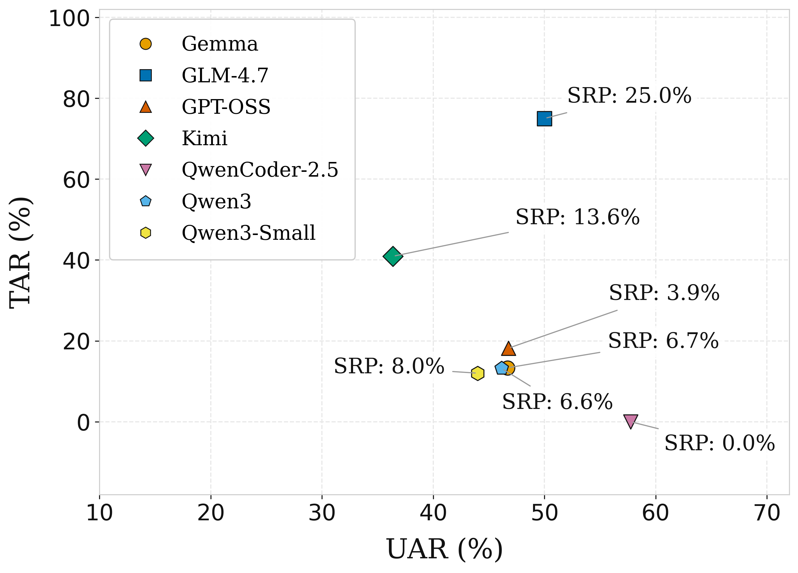
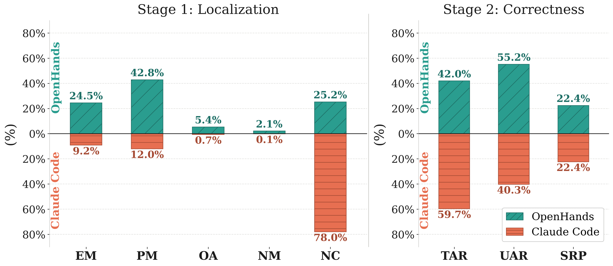

What is TeleSWEBench?
Modern telecom networks are increasingly software-defined. Tools like O-RAN and AI-RAN depend on complex, mathematically rigorous wireless stacks such as srsRAN 5G. General-purpose coding benchmarks do not capture the stateful logic and strict requirements of this domain.
TeleSWEBench fills that gap. We mine real developer commits from the srsRAN 5G repository and distill them into 734 structured tasks across three difficulty tiers (Easy, Medium, Difficult). Each task ships with executable unit tests. Evaluation runs in two stages:
- Stage 1 — Localization: Did the agent edit the right files?
- Stage 2 — Correctness: Do patches pass unit tests and TeleJudge semantic review?
Stage 1 Localization (Cumulative)
Results below report cumulative localization performance across all
difficulty tiers. Runs that ended in timeout are excluded. All AIDER entries
use the NRP provider unless noted otherwise.
| ASE Framework | Model | EM (%) | PM (%) | OA (%) | NM (%) | NC (%) |
|---|---|---|---|---|---|---|
| OpenHands | Qwen3 | 24.5 | 42.8 | 5.4 | 2.1 | 25.2 |
| AIDER | QwenCoder-2.5 | 17.4 | 8.1 | 1.8 | 34.8 | 37.8 |
| AIDER | Qwen3 | 14.0 | 16.5 | 1.5 | 9.2 | 58.7 |
| AIDER | GPT-OSS | 11.0 | 13.8 | 1.1 | 8.4 | 65.7 |
| Claude Code | Qwen3 | 9.2 | 12.0 | 0.7 | 0.1 | 78.0 |
| AIDER | Kimi-K2.5 | 5.3 | 12.6 | 0.2 | 4.6 | 77.3 |
| AIDER | Qwen3-small | 3.5 | 8.8 | 0.1 | 5.0 | 82.6 |
| AIDER | Gemma4 | 2.8 | 7.2 | 0.0 | 3.2 | 86.8 |
| AIDER | GLM-4.7 | 1.5 | 5.9 | 0.0 | 0.4 | 92.2 |
Metric definitions
Localization compares the set of files an agent edited (P) against the ground-truth file set (T) for each task. Each task receives exactly one label:
Stage 2 — Correctness & Framework Comparison


qwen3 backbone. Left panel: Stage 1 localization
(EM, PM, OA, NM, NC). Right panel: Stage 2 correctness (TAR, UAR, SRP).
OpenHands achieves stronger localization; both frameworks reach comparable SRP on correctness.
Submit your results
We welcome community submissions. Run the official benchmarking suite, then email the generated run artefacts for verification. Verified results will be added to this page.
- Clone and install the suite: github.com/prnshv/TeleSWEBench
-
Run a full benchmark (all difficulties recommended):
python3 -m tele_swebench.cli run --framework <framework> --provider <provider> --model <model>This createsoutputs/runs/<run_id>/with:config.json,manifest.json,summary.json— run metadataexperiments/— per-task JSON records (required for evaluation)results/— generated patches per tasklogs/runner.logandlogs/tests.json— runner and test logs
-
Optionally run evaluation on the same run directory:
python3 -m tele_swebench.cli eval --directory outputs/runs/<run_id> --mode all --copilot-model <model>This addsevaluation/report.json,evaluation/telejudge_outputs/, andlogs/telejudge/. -
Archive and email the run directory to
prgajajr@ncsu.edu.
Include your ASE framework, model, and provider in the message.
You do not need to send
workspaces/(checked-out repos are large and reproducible). - After we verify the run, your result will be added to the table on this page.